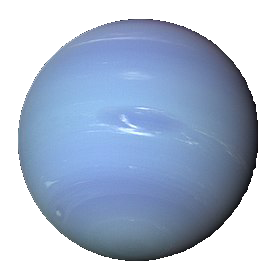

Júpiter es el planeta más grande de nuestro sistema solar. Es parecido a una estrella, pero nunca llegó a ser lo suficientemente masiva como para empezar a arder. Está cubierto de rayas de nubes arremolinadas. Tiene fuertes tormentas como la Gran Mancha Roja, que hace cientos de años que dura. Júpiter es un gigante hecho de gas, y no tiene una superficie sólida, pero puede tener un núcleo interno sólido de aproximadamente el tamaño de la Tierra. Júpiter también tiene anillos, pero son demasiado tenues para verlos muy bien. |
|  |
Neptuno es oscuro, frío y muy ventoso. Es el último de los planetas de nuestro sistema solar. Está más de 30 veces más lejos del Sol que la Tierra. Neptuno es muy parecido a Urano. Está compuesto de una espesa mezcla de agua, amoniaco y metano sobre un centro sólido del tamaño de la Tierra. Su atmósfera se compone de hidrógeno, helio y metano. El metano le da a Neptuno el mismo color azul de Urano. Neptuno tiene seis anillos que no se ven fácilmente. |